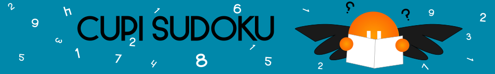

Sudoku
Desktop Java Swing application with configurable boards loaded from .properties files. The interface includes movement controls, game information, and actions to load, validate, restart, and solve Sudoku puzzles from Sudoku/data.